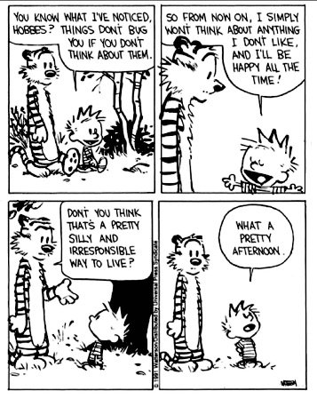

“There is no difference between Nirvana and the everyday world.” --David R. Loy
My client says she’s been feeling really good.
Peaceful, spacious, quiet, complete, and lighter by far.
Y’know, really good.
She's kind of amazed, actually.
And then... concern sneaks in.
Maybe she's feeling too good.
Maybe there's too much wholeness, too much peace.
She starts to wonder if under all this serenity there are still unseen realizations, still unresolved trauma.
Maybe this better feeling is (gasp) bypassing.
Bypassing is bad.
First, because as we all know, the right way to do life is to feel the hard feelings. We need to sit with them, validate them, turn towards them.
If we want contentment and better feelings later, we have to dive into and focus on bad feelings, not good ones, now.
Which is some kind of weird circular reasoning, considering that what we ultimately want to sit with bad feelings for, is to get those spacious good feelings. Which are already here. Without having to wait by dwelling on suffering.
But okay.
Second we all also know that in order to get shifts in the future, to feel good in the future, to be entitled to feel good in the future…
We must have AHA!s and realizations and better understandings of our past, our patterns, our inner child, first.
And if we're feeling content already, we may not bother with all that investigation and inquiry, and critical discoveries about self will get prevented, downright diverted, by too much feeling good.
So it's very important to not let peace get in the way of, and bypass, paying attention to all that pain.
After all, there's no relief that can't be improved by a good dose of efforting.
Then more peace, better peace, righter peace, will be ours at last.
No? Then enjoy some extra guilt and worry about doing things wrong, to fully eliminate any spaciousness that may have erroneously shown up for a while.
Sigh.
You can see that this everyone-buys-into-it story about "bypassing" is really just a requirement that the mind be in charge of every darn thing, right? A requirement to ensure that we not go getting all sufficient and complete, without involving the mind?
Even when we're already experiencing the peace we’ve sought for so long?
Because when we label an experience of current peace, “bypassing,” mind is essentially saying, “Look out! You’ll feel bad later, if you feel good now.”
As in, “There will be punishment for your peace. You will pay with deep future pain.”
Feeling good is suspicious, feeling good isn’t right, feeling good is bypassing. Don’t feel good.
So perhaps we can start to see that peace and contentment can actually become downright...
Revolutionary and subversive.
Because they begin to make us insubordinate to mind.
Dramatic words, yes. Perhaps true, though.
Still, if this feels like too heretical a perspective, not to worry. No one has to ignore feelings.
Feel them, or don't.
After all, they’re just feelings. They’re not so world-rulingly important.
It's just that maybe where we put our attention has always been more shifting than what we feeeel.
And instead of always focusing our attention on attaining the right feeling, maybe once in a while we can play with attending to - what cares, what hates one feeling and likes another, what feels in the first place, and what real thing, realizes.
Just for fun.
Because shifts happen all kinds of ways.
And maybe it’s possible to relax the need to do things right...
Relax the rule to not bypass...
And trust the peace when it shows up.
Which just might be
A whole new kind of
Really good.
every week.
“Sometimes I need only to stand wherever I am to be blessed.” — Mary Oliver
Bypassing?
